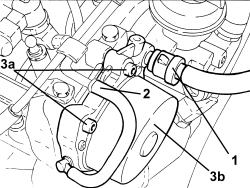
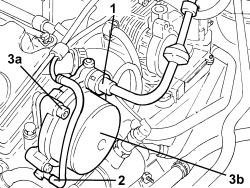

3330D30 VACUUM PUMP - R+R
- Path
- Procedures > 33 BRAKES > 3330 HYDRAULIC BRAKE SYSTEM > 3330D BRAKE VACUUM SYSTEM > 3330D30 VACUUM PUMP - R+R
- Kind
- repair procedure (removal / refitting; the operation number is the code)
- Applies to
- engines: 1.9 JTD 8V, 1.9 JTD 16V, 2.4 JTD 20V; all production periods
- Interactive page
- https://sloeber94.github.io/elrnDB/alfa/159/en/#/939010804
Applies to: engines: 1.9 JTD 16V, 2.4 JTD 20V; all production periods
 Removing
Removing
 Refitting
RefittingOp. 1016A10 SOUND-PROOFING COVER - R.R
Op. 5530B52 BATTERY SUPPORT/DRIP TRAY - R.R

Applies to: engines: 1.9 JTD 16V, 2.4 JTD 20V; all production periods
Refitting
RemovingComponent | Fastening | dia | Value (daNm) | Validity |
|---|---|---|---|---|
Vacuum unit | Bolt (pretreated to be replaced) | M6 | (cylinder head extension side) 0.5 + 50° | 1.9 JTD 16v 2.4 JTD 20v |
Applies to: engines: 1.9 JTD 8V; all production periods
Removing
RefittingOp. 1016A10 SOUND-PROOFING COVER - R.R
Op. 5530B52 BATTERY SUPPORT/DRIP TRAY - R.R
Op. 1048B27

Applies to: engines: 1.9 JTD 8V; all production periods
Refitting
RemovingComponent | Fastening | dia | Value (daNm) | Validity |
|---|---|---|---|---|
Vacuum unit | Bolt | M8 | (cylinder head side) 2.7 - 3.3 | 1.9 JTD 8v |
Op. 1048B27